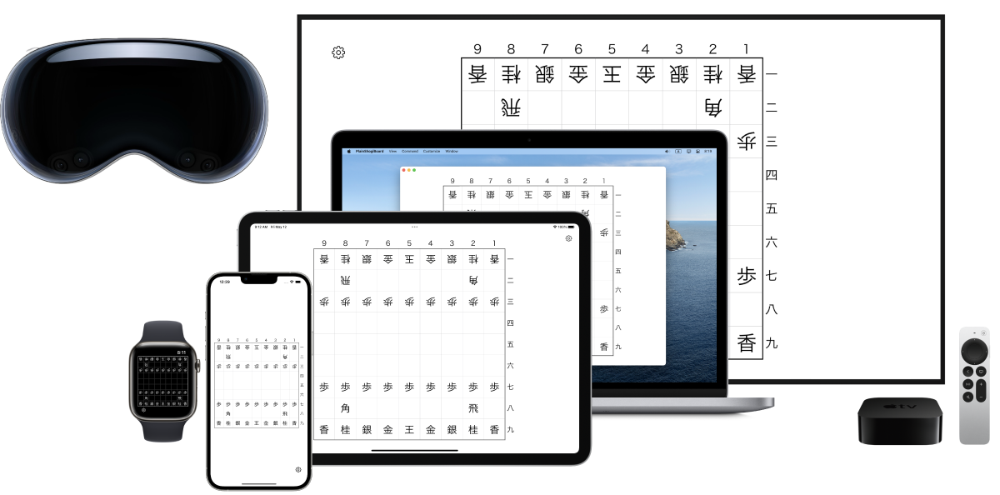

最もプレーンな将棋盤アプリ



駒を自由に動かせるただの将棋盤です。iPhone、iPad、Mac、Apple Watch、Apple TV向けアプリ。
iOSの標準デザインに沿ったシンプルな将棋盤アプリです。
任意の駒を消したり増やしたりことも出来ます。
文字の「大きさ」や「太さ」、「セリフ体」などをカスタマイズ出来ます。
駒を英語表記に変えられます。
盤面をテキストデータとして書き出したり読み込んだり出来ます。
局面はiCloudによって端末間で同期されます。
SharePlayに対応しています。
FaceTimeしながら友達と将棋盤を囲むことが出来ます。
SharePlay機能では「2人でシンプルに対局する」だけでなく、「大人数で詰将棋を解く」などの様々なユースケースを想定しています。

盤面をテキストデータとして書き出したり読み込んだり出来ます。
☗角͙
－－－－－－－－－
香͙桂͙銀͙金͙王͙金͙銀͙桂͙香͙
飛͙
歩͙歩͙歩͙歩͙歩͙歩͙ 歩͙歩͙
歩͙
歩
歩歩 歩歩歩歩歩歩
馬͙ 飛
香桂銀金王金銀桂香
－－－－－－－－－
☖
無料
広告を非表示にする(320円)

English
The Most Plain Shogi Board App


This is just a plain Shogi board with pieces you can move freely. app for iPhone, iPad, Mac, Apple Watch, Apple TV.
It is a simple Shogi board app following the standard iOS design.
You can delete or add any piece.
You can customize the font size, thickness, serif style, etc.
You can change the pieces to English.
Export and import board as text data.
Games are synchronized between devices via iCloud.
SharePlay is supported.
You can play Shogi with your friends over FaceTime.
The SharePlay function is not only for "a simple game between two players" but also for various use cases such as "solving Tsume-Shogi with a large number of players".
The board can be exported and imported as text data.
☗角͙
－－－－－－－－－
香͙桂͙銀͙金͙王͙金͙銀͙桂͙香͙
飛͙
歩͙歩͙歩͙歩͙歩͙歩͙ 歩͙歩͙
歩͙
歩
歩歩 歩歩歩歩歩歩
馬͙ 飛
香桂銀金王金銀桂香
－－－－－－－－－
☖
Free of charge
Hide ads (320 yen)
Indonesia
Aplikasi papan shogi yang paling sederhana


Hanya sebuah papan Shogi di mana Anda bisa memindahkan bidak dengan bebas. Aplikasi untuk iPhone, iPad, Mac, Apple Watch, dan Apple TV.
Aplikasi papan shogi sederhana yang mengikuti desain standar iOS.
Anda dapat menghapus atau menambahkan bidak apa pun.
Anda dapat menyesuaikan ukuran, ketebalan, dan gaya serif teks.
Anda dapat mengubah potongan-potongan ke notasi bahasa Inggris.
Mengekspor dan mengimpor papan sebagai data teks.
Game disinkronkan antar perangkat melalui iCloud.
SharePlay didukung.
Anda dapat bermain Shogi dengan teman melalui FaceTime.
Fungsi SharePlay dirancang untuk berbagai kasus penggunaan, seperti menyelesaikan Tsume-Shogi dengan sekelompok besar teman, serta "permainan sederhana antara dua orang".
Papan dapat diekspor dan diimpor sebagai data teks.
☗角͙
－－－－－－－－－
香͙桂͙銀͙金͙王͙金͙銀͙桂͙香͙
飛͙
歩͙歩͙歩͙歩͙歩͙歩͙ 歩͙歩͙
歩͙
歩
歩歩 歩歩歩歩歩歩
馬͙ 飛
香桂銀金王金銀桂香
－－－－－－－－－
☖
Gratis
Sembunyikan iklan (¥320)
Español
La aplicación de tablero de shogi más sencilla


Sólo un tablero Shogi donde puedes mover las piezas libremente.App para iPhone, iPad, Mac, Apple Watch y Apple TV.
Una sencilla app de tablero shogi que sigue el diseño estándar de iOS.
Puedes eliminar o añadir cualquier pieza.
Puedes personalizar el tamaño, grosor y estilo serif del texto.
Puedes cambiar las piezas a notación inglesa.
Exporta e importa el tablero como datos de texto.
Las partidas se sincronizan entre dispositivos a través de iCloud.
Compatible con SharePlay.
Puedes jugar a Shogi con tus amigos a través de FaceTime.
La función SharePlay está diseñada para varios casos de uso, como resolver Tsume-Shogi con un grupo grande de amigos, así como "un simple juego entre dos personas".
El tablero se puede exportar e importar como datos de texto.
☗角͙
－－－－－－－－－
香͙桂͙銀͙金͙王͙金͙銀͙桂͙香͙
飛͙
歩͙歩͙歩͙歩͙歩͙歩͙ 歩͙歩͙
歩͙
歩
歩歩 歩歩歩歩歩歩
馬͙ 飛
香桂銀金王金銀桂香
－－－－－－－－－
☖
Gratuito
Ocultar anuncios (¥320)
Deutsch
Die einfachste Shogi-Brett-App


Nur ein Shogi-Brett, auf dem Sie die Figuren frei bewegen können. App für iPhone, iPad, Mac, Apple Watch und Apple TV.
Eine einfache Shogi-Brett-App, die dem Standard-iOS-Design folgt.
Du kannst jede Figur löschen oder hinzufügen.
Sie können die Größe, Dicke und den Serifenstil des Textes anpassen.
Sie können die Figuren in englische Notation umwandeln.
Exportieren und importieren Sie das Brett als Textdaten.
Spiele werden zwischen Geräten über iCloud synchronisiert.
SharePlay wird unterstützt.
Sie können Shogi mit Ihren Freunden über FaceTime spielen.
Die SharePlay-Funktion ist für verschiedene Anwendungsfälle gedacht, z. B. für das Lösen von Tsume-Shogi mit einer großen Gruppe von Freunden oder für ein einfaches Spiel zwischen zwei Personen".
Das Spielbrett kann als Textdaten exportiert und importiert werden.
☗角͙
－－－－－－－－－
香͙桂͙銀͙金͙王͙金͙銀͙桂͙香͙
飛͙
歩͙歩͙歩͙歩͙歩͙歩͙ 歩͙歩͙
歩͙
歩
歩歩 歩歩歩歩歩歩
馬͙ 飛
香桂銀金王金銀桂香
－－－－－－－－－
☖
Kostenfrei
Werbung ausblenden (¥320)
Français
L'application de jeu de shogi la plus simple


Une application pour iPhone, iPad, Mac, Apple Watch et Apple TV.
Une application de shogi simple qui suit le design standard d'iOS.
Vous pouvez supprimer ou ajouter n'importe quelle pièce.
Vous pouvez personnaliser la taille, l'épaisseur et le style d'empattement du texte.
Vous pouvez changer les pièces en notation anglaise.
Exporter et importer le plateau sous forme de données textuelles.
Les parties sont synchronisées entre les appareils via iCloud.
SharePlay est pris en charge.
Vous pouvez jouer au Shogi avec vos amis via FaceTime.
La fonction SharePlay est conçue pour différents cas d'utilisation, tels que la résolution de Tsume-Shogi avec un grand groupe d'amis, ainsi qu'un "jeu simple entre deux personnes".
Le tableau peut être exporté et importé sous forme de données textuelles.
☗角͙
－－－－－－－－－
香͙桂͙銀͙金͙王͙金͙銀͙桂͙香͙
飛͙
歩͙歩͙歩͙歩͙歩͙歩͙ 歩͙歩͙
歩͙
歩
歩歩 歩歩歩歩歩歩
馬͙ 飛
香桂銀金王金銀桂香
－－－－－－－－－
☖
Gratuit
Masquer les publicités (¥ 320)
Português
A aplicação de tabuleiro de shogi mais simples


Apenas um tabuleiro de Shogi onde pode mover as peças livremente. Aplicação para iPhone, iPad, Mac, Apple Watch e Apple TV.
Uma aplicação simples de tabuleiro de shogi que segue o design padrão do iOS.
Pode apagar ou adicionar qualquer peça.
Pode personalizar o tamanho, a espessura e o estilo serifado do texto.
Pode alterar as peças para notação inglesa.
Exportação e importação do tabuleiro como dados de texto.
Os jogos são sincronizados entre dispositivos através do iCloud.
O SharePlay é suportado.
Pode jogar Shogi com os seus amigos através do FaceTime.
A função SharePlay foi concebida para vários casos de utilização, como a resolução de Tsume-Shogi com um grande grupo de amigos, bem como "um simples jogo entre duas pessoas".
O tabuleiro pode ser exportado e importado como dados de texto.
☗角͙
－－－－－－－－－
香͙桂͙銀͙金͙王͙金͙銀͙桂͙香͙
飛͙
歩͙歩͙歩͙歩͙歩͙歩͙ 歩͙歩͙
歩͙
歩
歩歩 歩歩歩歩歩歩
馬͙ 飛
香桂銀金王金銀桂香
－－－－－－－－－
☖
Gratuito
Ocultar anúncios (¥320)
Русский
Самое простое приложение для доски сёги


Просто доска для сёги, где вы можете свободно перемещать фигуры. Приложение для iPhone, iPad, Mac, Apple Watch и Apple TV.
Простое приложение для доски сёги, соответствующее стандартному дизайну iOS.
Вы можете удалить или добавить любую фигуру.
Вы можете настроить размер, толщину и стиль засечек текста.
Вы можете перевести фигуры в английскую нотацию.
Экспортируйте и импортируйте доску в виде текстовых данных.
Игры синхронизируются между устройствами через iCloud.
Поддерживается функция SharePlay.
Вы можете играть в сёги с друзьями по FaceTime.
Функция SharePlay предназначена для различных сценариев использования, таких как решение Цуме-Сёги с большой группой друзей, а также "простая игра между двумя людьми".
Доска может быть экспортирована и импортирована в виде текстовых данных.
☗角͙
－－－－－－－－－
香͙桂͙銀͙金͙王͙金͙銀͙桂͙香͙
飛͙
歩͙歩͙歩͙歩͙歩͙歩͙ 歩͙歩͙
歩͙
歩
歩歩 歩歩歩歩歩歩
馬͙ 飛
香桂銀金王金銀桂香
－－－－－－－－－
☖
Бесплатно
Скрыть рекламу (¥320)
中文
最朴素的象棋棋盘应用


只是一个可以自由移动棋子的Shogi棋盘。适用于iPhone、iPad、Mac、Apple Watch和Apple TV的应用程序。
一个简单的象棋棋盘应用，遵循标准的iOS设计。
你可以删除或添加任何棋子。
你可以自定义文本的大小、厚度和衬线风格。
你可以把棋子改成英文记号。
将棋盘作为文本数据导出和导入。
游戏通过iCloud在设备间同步。
支持SharePlay。
你可以通过FaceTime与你的朋友一起玩Shogi。
SharePlay功能是为各种使用情况设计的，例如与一大群朋友一起解决Tsome-Shogi，以及 "两个人之间的简单游戏"。
棋盘可以作为文本数据导出和导入。
☗角͙
－－－－－－－－－
香͙桂͙銀͙金͙王͙金͙銀͙桂͙香͙
飛͙
歩͙歩͙歩͙歩͙歩͙歩͙ 歩͙歩͙
歩͙
歩
歩歩 歩歩歩歩歩歩
馬͙ 飛
香桂銀金王金銀桂香
－－－－－－－－－
☖
免费的
隐藏广告 (¥320)
Українська
Найпростіший додаток для дошки для сьоґі


Просто дошка для гри в сьогі, де ви можете вільно пересувати фігури. Додаток для iPhone, iPad, Mac, Apple Watch і Apple TV.
Простий додаток для гри в сьогі, що відповідає стандартному дизайну iOS.
Ви можете видалити або додати будь-яку фігуру.
Ви можете налаштувати розмір, товщину і стиль зарубок тексту.
Ви можете змінити позначення фігур на англійську мову.
Експортуйте та імпортуйте дошку як текстові дані.
Ігри синхронізуються між пристроями через iCloud.
Підтримується функція SharePlay.
Ви можете грати в сьоґі з друзями через FaceTime.
Функція SharePlay призначена для різних сценаріїв використання, таких як розв'язання Цуме-Сьогі з великою групою друзів, а також як "проста гра між двома людьми".
Дошку можна експортувати та імпортувати як текстові дані.
☗角͙
－－－－－－－－－
香͙桂͙銀͙金͙王͙金͙銀͙桂͙香͙
飛͙
歩͙歩͙歩͙歩͙歩͙歩͙ 歩͙歩͙
歩͙
歩
歩歩 歩歩歩歩歩歩
馬͙ 飛
香桂銀金王金銀桂香
－－－－－－－－－
☖
Безкоштовно
Приховати оголошення (¥320)
한국어
가장 평범한 바둑판 앱


iPhone, iPad, Mac, Apple Watch, Apple TV용 앱으로, 바둑알을 자유롭게 움직일 수 있는 단순한 바둑판입니다.
iOS의 표준 디자인을 따르는 심플한 바둑판 앱입니다.
원하는 말을 지우거나 늘릴 수도 있습니다.
글자의 '크기', '굵기', '세리프체' 등을 커스터마이징 할 수 있습니다.
영어 표기로 바꿀 수 있습니다.
바둑판을 텍스트 데이터로 내보내거나 불러올 수 있습니다.
국면은 iCloud를 통해 기기간에 동기화됩니다.
SharePlay를 지원합니다.
FaceTime을 하면서 친구와 함께 바둑판을 둘러앉을 수 있습니다.
SharePlay 기능은 '둘이서 간단하게 대국하는 것'뿐만 아니라, '여러 명이 모여서 장기 두는 것' 등 다양한 사용처를 상정하고 있습니다.
바둑판을 텍스트 데이터로 내보내거나 불러올 수 있습니다.
☗角͙
－－－－－－－－－
香͙桂͙銀͙金͙王͙金͙銀͙桂͙香͙
飛͙
歩͙歩͙歩͙歩͙歩͙歩͙ 歩͙歩͙
歩͙
歩
歩歩 歩歩歩歩歩歩
馬͙ 飛
香桂銀金王金銀桂香
－－－－－－－－－
☖
무료
광고 숨기기(320엔)